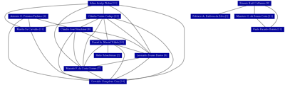

PROCC
[
Membros
|
Produção bibliográfica
|
Produção técnica
|
Produção artística
|
Orientações
|
Grafo de colaborações
|
Métricas
]
Produção bibliográfica
Artigos completos publicados em periódicos
(608)
Livros publicados/organizados ou edições
(9)
Capítulos de livros publicados
(41)
Textos em jornais de notícias/revistas
(3)
Artigos aceitos para publicação
(8)
Demais tipos de produção bibliográfica
(10)
Total de produção bibliográfica
(679)
Produção técnica
Trabalhos técnicos
(17)
Demais tipos de produção técnica
(29)
Total de produção técnica
(46)
Produção artística
Nenhum item achado nos currículos Lattes
Orientações
Orientações em andamento
Supervisão de pós-doutorado
(6)
Tese de doutorado
(22)
Dissertação de mestrado
(11)
Trabalho de conclusão de curso de graduação
(1)
Iniciação científica
(3)
Total de orientações em andamento
(43)
Supervisões e orientações concluídas
Supervisão de pós-doutorado
(19)
Tese de doutorado
(85)
Dissertação de mestrado
(91)
Monografia de conclusão de curso de aperfeiçoamento/especialização
(2)
Trabalho de conclusão de curso de graduação
(11)
Iniciação científica
(27)
Orientações de outra natureza
(14)
Total de orientações concluídas
(249)
Grafo de colaborações

Data de processamento: 19/11/2019 14:47:18